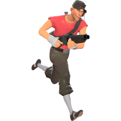

Before you play tf2 (Tf2 classes)
I am just going to keep it all short and simple. Team Fortress 2 is funny as shit and also sometime's annoying as fuck

I have no soul.. why? Because im just me, so because of that I will start
talking about Team Fortress 2.. why? I don't know, because I want to? All classes are fun, it
just depense on your playing style... I guess???
-
SCOUT: Is from USA, Boston Massachusetts. Fun, the fastest, the only one who can double jump, annoying etc.
Hitpoints: 125 (Low) Main: Scattergun. Secondary: Pistol. Melee: Bat.

-
SOLDIER: Is from USA, Midwest. Fun, can rocket jump, is dumb and stupid, annoying etc.
Hitpoints: 200 (Above average) Main: Rocket launcher. Secondary:
Shotgun. Melee: Shovel.

-
PYRO: Is... Unknown. Fun, a psychopath without even knowing, don't know if its a man or
a women, annoying etc. Hitpoints: 175 (Average) Main: Flame thrower.
Secondary: Shotgun. Melee: Fire axe.

-
DEMOMAN: Is from Scotland. Fun, the only black charecter, sometime's he's drunk, annoying
etc. Hitpoints: 150 (Below average) Main: Grenade launcher. Secondary:
Stickybomb launcher. Melee: Bottle.

-
HEAVY: Is from Russia, USSR. Fun, is a tank for the team, the slowest, annoying etc.
Hitpoints: 300 (High) Main: Minigun. Secondary: Shotgun. Melee: Fists.

-
ENGINEER: Is from USA, Bee cave Texas. Fun, can build with he's construction pda a sentry gun a
dispenser and a teleporter, loves he's guns, annoying etc. Hitpoints:
125 (Low) Main: Shotgun. Secondary: Pistol. Melee: Wrench.
-
MEDIC: Is from Germany (Don't know if he was a nazi or not) Fun, technically the only one that can heal, maybe the most
craziest out of all, annoying etc. Hitpoints: 150 (Below average) Main:
Syringe gun. Secondary: Medi gun (Can't do damage, only heal) Melee:
Bonesaw

-
SNIPER: Is from New Zealand. Fun, can shot targets from a long distance, dosent have much
personality compared to others, annoying etc. Hitpoints: 125 (Low) Main:
Sniper rifle. Secondary: Smg. Melee: Kukri.

-
SPY: Is from France (And is biologically Scout's dad) Fun, can destroy sentry guns with sapper, go invisible and kill
anybody with 1 backstab, annoying etc. Hitpoints: 125 (Low) Main
Revolver. Melee: Knife. Secondary/third: Invis watch (Can't do damage, only go invisible)

I hope that this wasted your time as much as mine. Have a good day